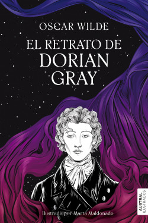

Soy un joven de 19 años, Estudiante de ingenieria de sistemas de 4 semestre de la universidad de la costa.
-INTELIGENTE -ATENTO -JUGAR FUTBOL -BAILAR -APRENDER
El retrato de Dorian Gray, Oscar Wilde
Don Quijote de la Mancha, Miguel de Cervantes

El Gran Gatsby, F. Scott Fitzgerald